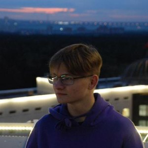

Городские тени
Чёрно-белые снимки ночного города.
Локация: центр города

Максим ФилоненкоФотограф и визуальный сторителлер
Рассказываю истории через кадр — от городских улиц до тихих деталей быта.
Чёрно-белые снимки ночного города.
Локация: центр города
Портреты людей из повседневной жизни.
Локация: жилой район
Спокойные кадры города до пробуждения.
Локация: набережная
Архитектурные детали старых зданий.
Локация: старый квартал
ISO 400
Подходит для съёмки при умеренном освещении.
1/250 с
Помогает сохранить резкость при съёмке движения.
f/2.8
Позволяет выделить объект на мягком фоне.